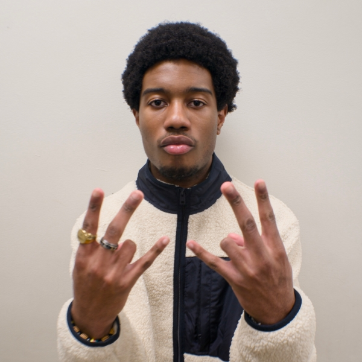
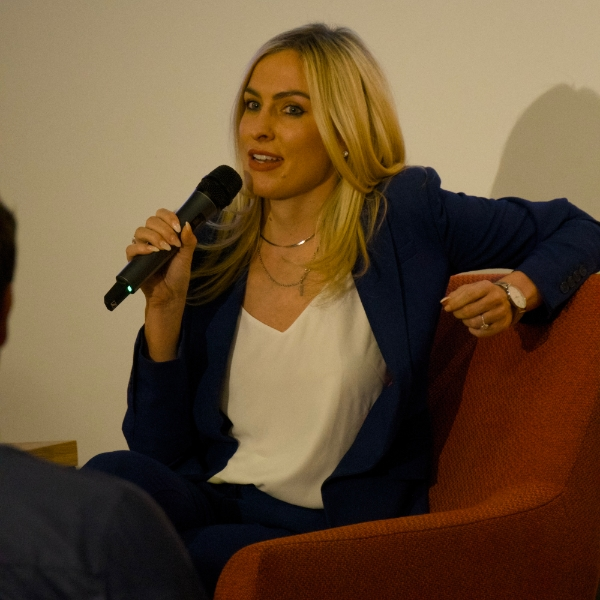
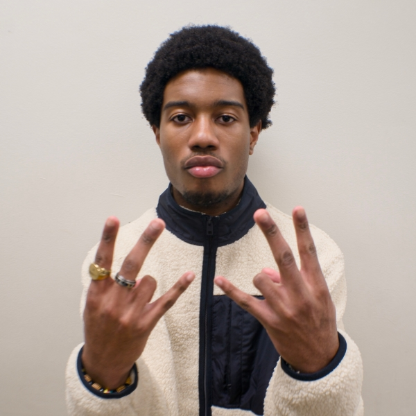
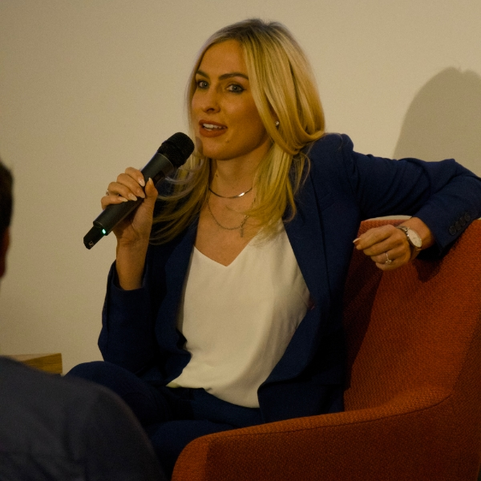

Turgeon.Frames, c'est la polyvalence — capturer la vie sous tous les angles. Que ce soit des sports rapides, de la photographie de rue, des portraits, des événements ou de la création de contenu, Gabriel Turgeon apporte un œil créatif et un style adaptable à chaque prise. Peu importe l'ambiance, l'objectif reste le même : des visuels propres et authentiques qui en disent plus que des mots.
Gab n'est pas seulement derrière la caméra — il est aussi un travailleur hybride. Donc, si vous avez besoin de montage, de retouche ou de magie en post-production, c'est votre homme. Des prises brutes à la touche finale, Turgeon.Frames s'occupe de tout.
Chez Turgeon.Frames, il s'agit de capturer les moments qui comptent.
Que ce soit pour une séance, un événement ou un projet créatif,
l'objectif est de livrer des visuels percutants — propres, authentiques
et pleins de personnalité. Chaque service est flexible et adapté à votre style,
avec un mélange de créativité, de qualité et de soin derrière chaque prise.
Note : Les prix indiqués sont pour des séances d'une heure et peuvent varier selon l'événement ou le projet.
Chaque séance est construite autour de vous — votre style, votre énergie, votre ambiance. Que ce soit décontracté, audacieux, créatif ou classique, le but est de vous capturer de la manière la plus authentique et marquante possible. Les prix commencent à 90 $ pour une séance individuelle et 150 $ pour 2 personnes ou plus, incluant des photos retouchées et une galerie privée en ligne pour partager et télécharger facilement.
Capturez des moments en mouvement. Du montage narratif aux visuels cinématographiques, chaque vidéo est conçue pour donner vie à votre vision — que ce soit pour une marque, un événement ou simplement un souvenir à revivre en images. Les prix commencent à 100 $ par projet, incluant une vidéo entièrement montée avec coupes propres, étalonnage des couleurs, audio synchronisé et un lien privé pour partager et télécharger facilement.
Les photos figent un moment. Les vidéos le font revivre. Chez turgeon.frames, vous avez le meilleur des deux mondes. Que ce soit un événement complet, un projet personnel ou du contenu pour votre marque, les séances hybrides offrent un mélange de photographie de haute qualité et de vidéographie cinématographique — le tout adapté à votre style. Les prix commencent à 120 $ pour un forfait hybride, incluant une séance photo complète, une vidéo montée, des photos retouchées et une galerie privée ainsi qu'un lien vidéo pour partager et télécharger facilement.


 


